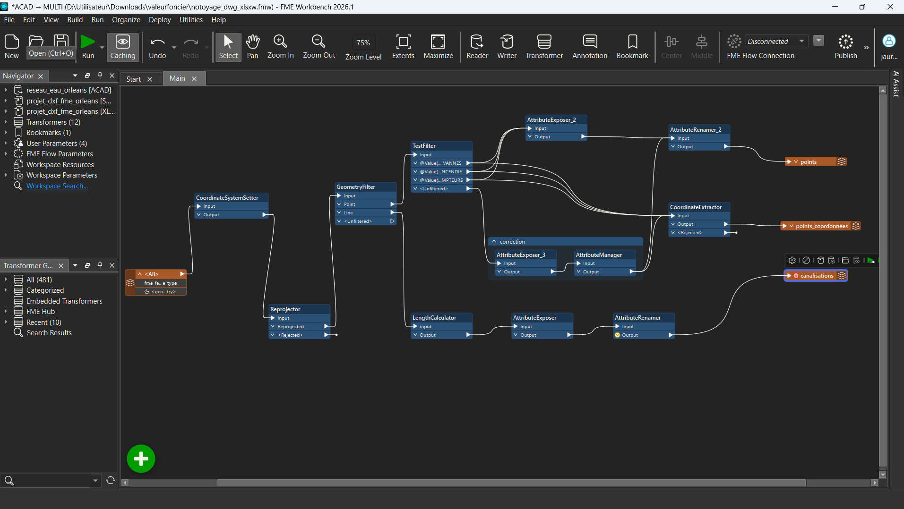

Interopérabilité de données géospatiales · FME Workbench · Mission, 2026
Contrôle et normalisation de plans DWG pour un réseau d'eau
Structurer un plan CAO du réseau d'eau d'Orléans en couches SIG exploitables
Contexte et objectif
Les bureaux d'études et les gestionnaires de réseaux reçoivent encore aujourd'hui une grande quantité de plans techniques au format DWG. Avant leur intégration dans un SIG ou une base de données, un travail de contrôle et de normalisation est souvent nécessaire : les entités y sont organisées par calques CAO (vannes, incendie, compteurs, canalisations) plutôt que par thème SIG, le système de coordonnées n'est pas toujours renseigné, et les attributs bruts ne sont pas directement exploitables. Ce workflow a été conçu pour automatiser cette normalisation sur un plan du réseau d'eau de l'agglomération d'Orléans.
Démarche et outils
Le plan CAO du réseau d'eau (format DWG) est lu directement dans FME Workbench, puis traité en plusieurs étapes :
- Séparation des entités ponctuelles et linéaires avec
GeometryFilter. - Classification des points par type d'ouvrage à partir de leur calque CAO d'origine avec
TestFilter: vannes, bouches et poteaux incendie, compteurs. - Attribution et contrôle du système de coordonnées (
CoordinateSystemSetter,Reprojector). - Extraction des coordonnées X/Y de chaque point avec
CoordinateExtractor, pour obtenir une couche géoréférencée directement exploitable dans un tableur ou une base de données. - Nettoyage et renommage des attributs des lignes de canalisation (
AttributeExposer,AttributeManager,AttributeRenamer) et calcul automatique de leur longueur avecLengthCalculator.

Résultats
Le traitement produit trois couches directement exploitables à partir du plan DWG d'origine : une couche de points classés par type d'ouvrage (vannes, incendie, compteurs), une couche de points avec leurs coordonnées extraites en attributs, et une couche de canalisations aux attributs nettoyés et à la longueur calculée automatiquement. Cette normalisation supprime le travail de reprise manuelle habituellement nécessaire avant intégration dans un SIG, tout en garantissant une structure homogène et reproductible d'un plan à l'autre.